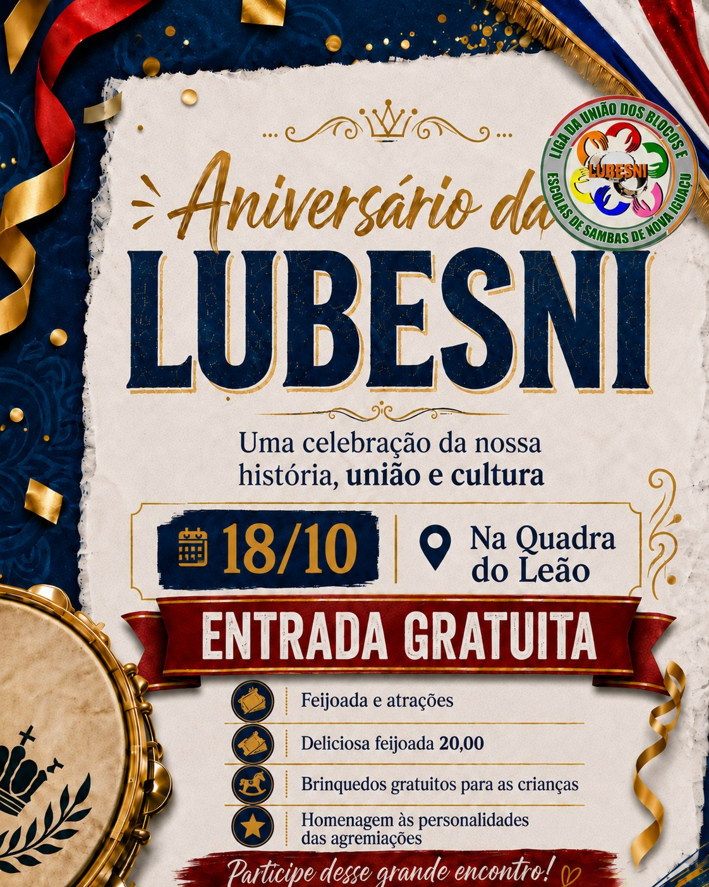

Cartaz oficial divulgado
A LUBESNI divulga o cartaz oficial do Aniversário, marcado para 18 de outubro de 2026, na Quadra do Leão de Nova Iguaçu.
Uma celebração da nossa história, da união das agremiações e da força do carnaval de Nova Iguaçu.
No dia 18 de outubro, a LUBESNI celebra sua história, a união das agremiações filiadas e a força do carnaval de Nova Iguaçu em um grande encontro na Quadra do Leão de Nova Iguaçu.
Mais do que uma comemoração, o aniversário é um dia de encontro, reconhecimento e fortalecimento de quem mantém viva a cultura popular da nossa cidade — com espaço especial para homenagear as personalidades das agremiações filiadas.

Quadra do Leão de Nova Iguaçu.
Aberta a toda a comunidade, sem custo.
Feijoada à venda durante o evento.
Espaço infantil com brinquedos gratuitos.
Esta página será atualizada com fotos, confirmações de agremiações e novidades conforme o evento se aproxima.
A LUBESNI divulga o cartaz oficial do Aniversário, marcado para 18 de outubro de 2026, na Quadra do Leão de Nova Iguaçu.
Agremiações filiadas que desejam confirmar presença, indicar personalidades para a homenagem ou enviar fotos e materiais para divulgação podem entrar em contato diretamente com a Liga.